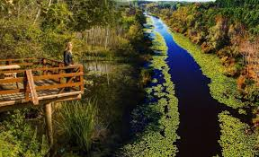
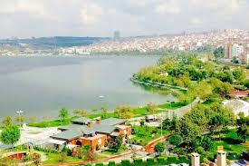

Şehrim: Sakarya

Justinianus Köprüsü
Sakarya'nın tarihi simgelerinden biri.

Sapanca Gölü
Doğal güzelliğiyle büyüleyen bir durak.

Sakarya Park
Şehrin merkezinde nefes alacak bir alan.
Sakarya Hakkında
Sakarya, Marmara Bölgesi'nin kuzeydoğusunda yer alan, doğası ve sanayisiyle öne çıkan bir şehirdir. Özellikle Sapanca Gölü, Taraklı evleri ve verimli topraklarıyla bilinir.